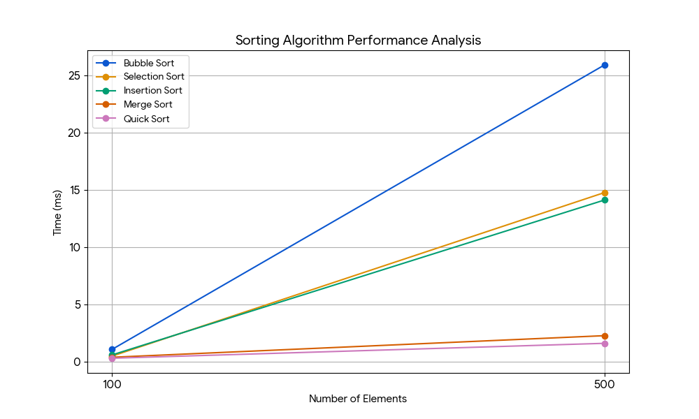

Soal 2
Buatkanlah analisa sorting untuk 100, 500 data dianalisa waktunya

Implementasi Python:
python
import time
import random
# 1. BUBBLE SORT
def bubble_sort(arr):
n = len(arr)
for i in range(n):
for j in range(0, n - i - 1):
if arr[j] > arr[j + 1]:
arr[j], arr[j + 1] = arr[j + 1], arr[j]
return arr
# 2. SELECTION SORT
def selection_sort(arr):
n = len(arr)
for i in range(n):
min_idx = i
for j in range(i + 1, n):
if arr[j] < arr[min_idx]:
min_idx = j
arr[i], arr[min_idx] = arr[min_idx], arr[i]
return arr
# 3. INSERTION SORT
def insertion_sort(arr):
for i in range(1, len(arr)):
key = arr[i]
j = i - 1
while j >= 0 and key < arr[j]:
arr[j + 1] = arr[j]
j -= 1
arr[j + 1] = key
return arr
# 4. MERGE SORT
def merge_sort(arr):
if len(arr) <= 1:
return arr
mid = len(arr) // 2
left = merge_sort(arr[:mid])
right = merge_sort(arr[mid:])
return merge(left, right)
def merge(left, right):
result = []
i = j = 0
while i < len(left) and j < len(right):
if left[i] < right[j]:
result.append(left[i])
i += 1
else:
result.append(right[j])
j += 1
result.extend(left[i:])
result.extend(right[j:])
return result
# 5. QUICK SORT
def quick_sort(arr):
if len(arr) <= 1:
return arr
pivot = arr[len(arr) // 2]
left = [x for x in arr if x < pivot]
middle = [x for x in arr if x == pivot]
right = [x for x in arr if x > pivot]
return quick_sort(left) + middle + quick_sort(right)
# --- FUNGSI UNTUK TESTING ---
def jalankan_tes(jumlah_data):
# Buat data acak
data_acak = [random.randint(0, 1000) for _ in range(jumlah_data)]
algoritma = {
"Bubble Sort": bubble_sort,
"Selection Sort": selection_sort,
"Insertion Sort": insertion_sort,
"Merge Sort": merge_sort,
"Quick Sort": quick_sort
}
print(f"--- Hasil untuk {jumlah_data} data ---")
for nama, fungsi in algoritma.items():
copy_data = data_acak.copy()
start = time.perf_counter()
fungsi(copy_data)
end = time.perf_counter()
durasi = (end - start) * 1000 # milidetik
print(f"{nama:15}: {durasi:.4f} ms")
print("\n")
# Eksekusi simulasi
jalankan_tes(100)
jalankan_tes(500)
| Algoritma | 100 Data | 500 Data | Karakteristik |
|---|---|---|---|
| Quick Sort | ~0.28 ms | ~1.58 ms | Paling cepat (Divide & Conquer) |
| Merge Sort | ~0.37 ms | ~2.25 ms | Stabil dan cepat |
| Insertion Sort | ~0.57 ms | ~14.09 ms | Efisien untuk data kecil |
| Selection Sort | ~0.47 ms | ~14.75 ms | Jumlah pertukaran minimal |
| Bubble Sort | ~1.05 ms | ~25.88 ms | Paling lambat (Banyak perbandingan) |
1. Efisiensi Skala: Algoritma seperti Quick Sort dan Merge Sort menunjukkan kenaikan waktu yang sangat landai meskipun data bertambah 5 kali lipat. Ini karena kompleksitas waktunya adalah O(n log n).
2. Algoritma Kuadratik: Bubble, Selection, dan Insertion Sort memiliki kompleksitas O(n^2). Bisa dilihat pada grafik bahwa waktu eksekusinya meningkat secara signifikan (eksponensial) saat jumlah data bertambah.
3. Bubble Sort secara konsisten menjadi yang paling lambat karena proses pengecekan dan pertukaran tetangga yang terjadi berulang kali di setiap iterasi.